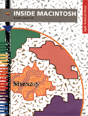

Memory
Inside Macintosh: Memory describes the parts of the Macintosh Operating System that allow you to directly allocate, release, or otherwise manipulate memory.This book shows in detail how your application can manage the memory partition it is allocated and perform other memory-related operations. With this book, you'll learn how to
Additional aspects of the Macintosh Operating System are discussed in these Inside Macintosh books: Files, Processes, Operating Systems Utilities, and Devices.
- set up your application heap at launch time
- allocate blocks of memory in your application heap
- avoid heap fragmentation
- avoid using dangling pointers and invalid handles
- allocate memory outside your application heap
- be compatible with virtual memory
- avoid using stale data or instructions in the CPU caches
Availability: Click below to obtain Inside Macintosh: Memory in any of the following formats.

Book Contents
- Figures, Tables, and Listings
- Preface - About This Book
- Chapter 1 - Introduction to Memory Management
- Chapter 2 - Memory Manager
- Chapter 3 - Virtual Memory Manager
- Chapter 4 - Memory Management Utilities
- Glossary
- Index